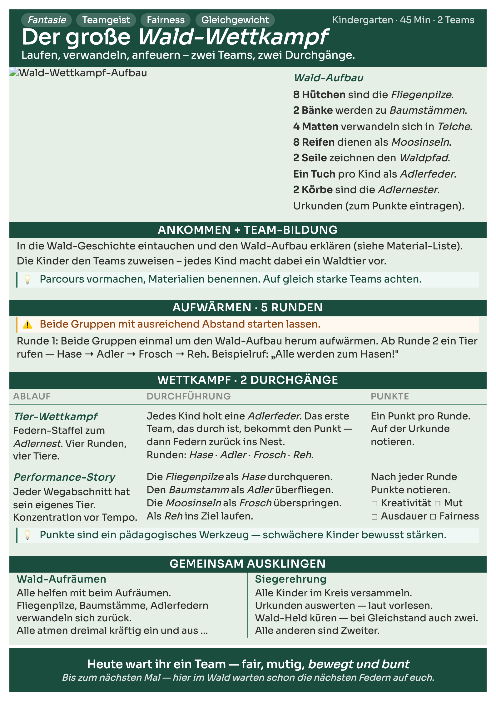
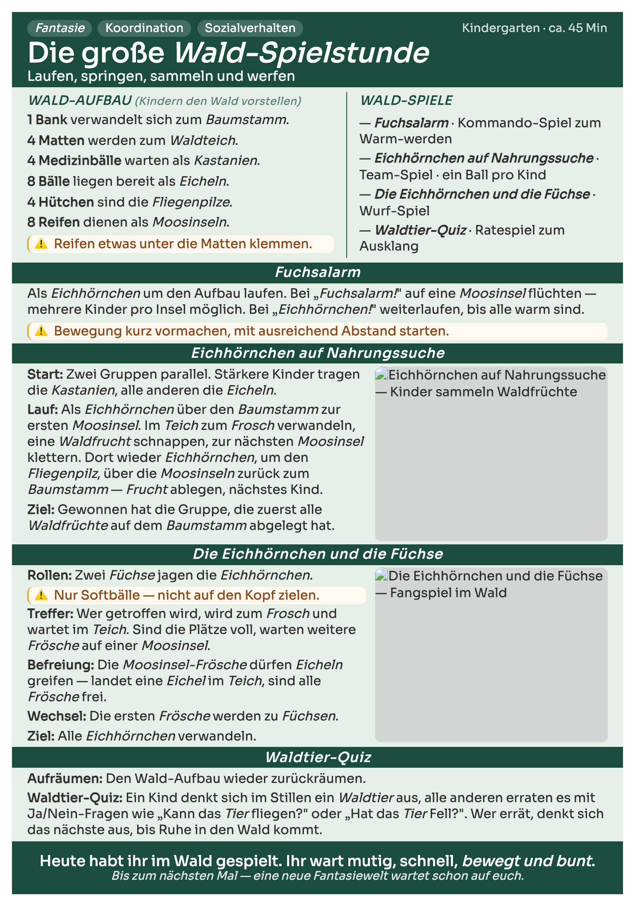
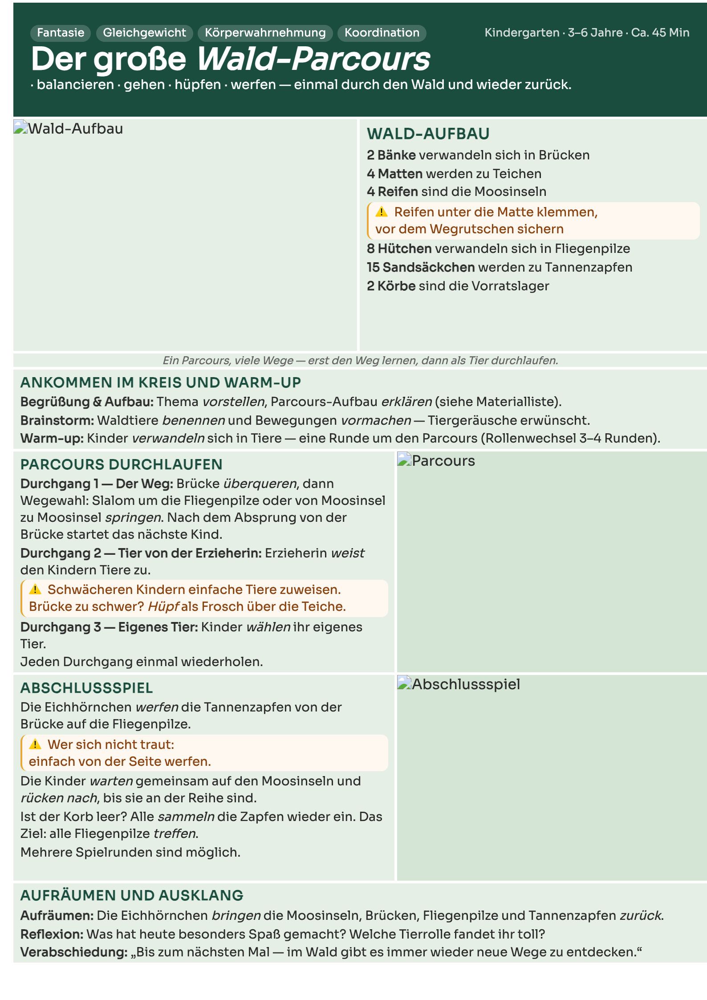
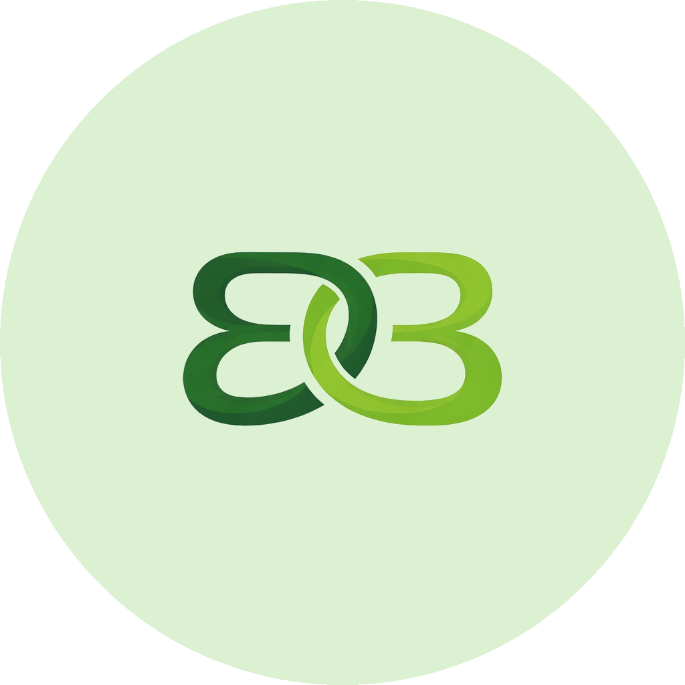

Themenwelten für Bewegungsstunden in Krippe und Kindergarten — strukturiert wie ein Konzept, erzählt wie eine Geschichte.



Jedes Handout folgt demselben Aufbau — Material, Erklärung, Spiele, Abschluss. Wer ein Handout kennt, kennt alle. Das macht Bewegungsstunden planbar, vorbereitbar und in der Durchführung sicher.
Die Welten unterscheiden sich, das System bleibt: Im Wald wird das Hütchen zum Fliegenpilz, am Flughafen zum Absperrhütchen, auf dem Bauernhof zum Heuhaufen. Die Bewegung dahinter ist dieselbe — die Geschichte ist neu.
So entsteht Bewegungs-Pädagogik, die wiederholbar ist, schnell lernbar und für jedes pädagogische Team einsetzbar — und in der die Fantasie der Kinder nicht zu kurz kommt.

Hinter bewegt & bunt steht René Krakow, Ergotherapeut mit über 20 Jahren Berufserfahrung — heute als Individualbegleiter in Kindertagesstätten. Aus dieser Praxis heraus entstehen die Themenwelten.
Mehr über René →